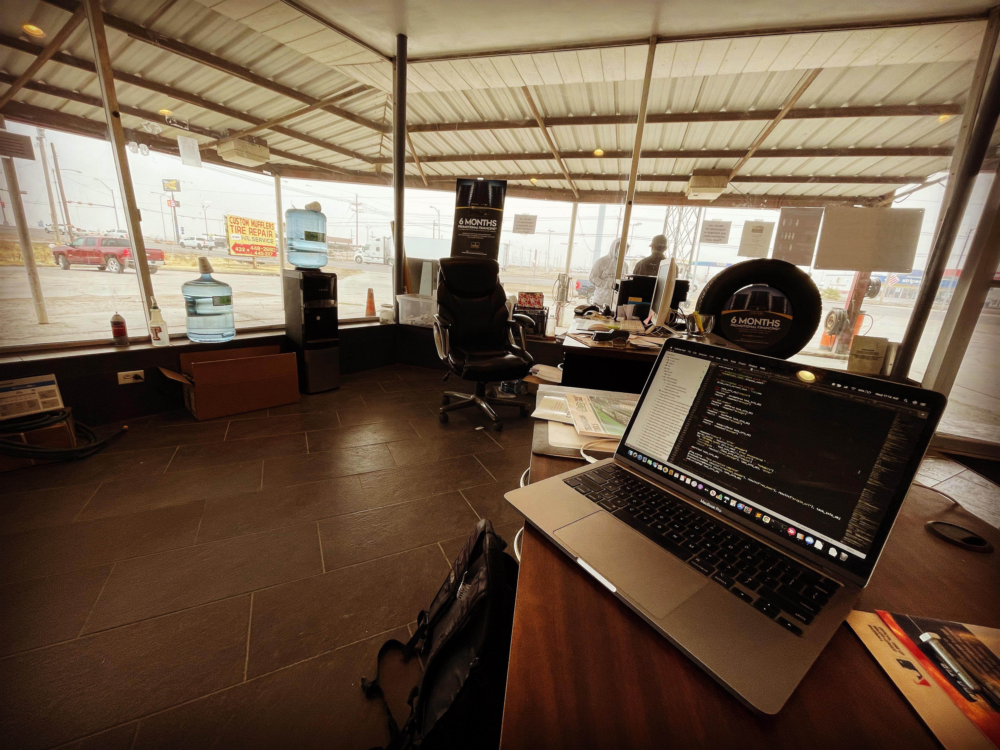

[caption id="attachment_4574" align="alignnone" width="4032"] Office for the day. A proxy of view into the heart of the Permian basin as I get my car wheels aligned[/caption]
The level of auto traffic along the Cedar Street, Pecos Texas is a very clear proxy on the health status of the US Oil industry.
Factors negatively impacting economic activities in the area:
- US Elections: Oil companies operating in area put activities on hold awaiting for forthcoming mandate
- Holidays: Demand for oil drops
- COVID pandemic: Demand for oil drops
Responsiveness of lagging indicators:
- Lag time between events and lagging indicators within the region is typically 24 hours
- Layoffs can happen within 24 hours of environment triggers
- Rapid hiring can happen within 24 hours of environment trigger
- On occasions, rapid hiring and layoffs could happen simultaneously in different sectors
Qualitative background:
On mornings during times of Economic boom in the Oil industry, the Pilot center across the street could be observe lined with trucks rushing to fuel up as they go about transporting out their cargo to their destinations.
On such days, the empty parking lot in front of Custom Mufflers Tire Repair center could be seen filled up with trucks getting their wheels serviced.
With the election of President Biden, a bill was past that totally stopped all oil and gas related activities in New Mexico. This has resulted in the damping of traffic heading north along Cedar Street for the foreseeable future.